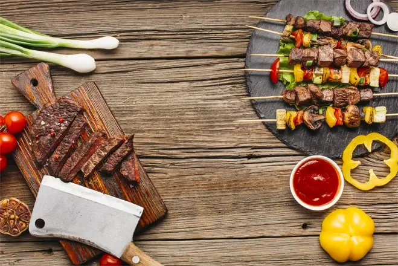

Brightness

Contrast
Hue Rotate
Saturate
Shadow & Opacity
Blur
Grayscale && Invert && Sepia
Transition
Scale 1.5
Table
| S.No | Name | contact number | Status |
|---|---|---|---|
| 1 | Kumar | 123456789 | Active |
| 2 | Kumar | 123456789 | Active |
| 3 | Kumar | 123456789 | Active |
SVG
Fill
Stroke
Stroke Width
Interactivity
Accent Color
Appearance
cursor
carret color
resize
User Select
The quick brown fox jumps over the lazy dog.
The quick brown fox jumps over the lazy dog.
The quick brown fox jumps over the lazy dog.